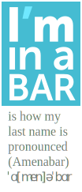

CV – Résumé
front-end developer / designer

Agustín Amenábar L.
full name: Bernardo Agustín Amenábar Larraín
Summary
Graphic Designer by profession, passionate software developer by choice.
Doing the most varied client work since 2004, always elbow to elbow with designers. From UX to server–side optimization, a wide view of problems usually lets me find solutions where they are most effective.
Currently working as a Team Lead of the Frontend Engineers at EQS Group, in Munich.
Skills
Frontend
- HTML / CSS – (10+ years) Responsive web design, progressive enhancement, modern browser APIs, mobile first.
- JavaScript: ES5, ES6+ (8 years)
- TypeScript: AKA productive JavaScript (1+ year)
- Angular + RxJS (1+ year)
- SEO and HTML semantic markup:
<i>isn’t for icon. (9 years) - Frontend Performance
- VueJS (1- year)
- jQuery (6 years)
- Backbone (1 year)
- Sencha Touch 2, ExtJS (MVC JavaScript) (3 years)
Backend
- NodeJS, Expessjs & tooling (4+ years)
- LAMP stack, several frameworks. (13 years)
- MySQL (8 years), Working knowledge of Mongodb and SQLite
- Nginx (3+ years)
- Drupal (2 years)
- WordPress (6 years)
- Code Igniter (2 years)
CI/CD: Testing & DevOps
- Git (6+ years)
- Docker (3 years)
- Jenkins for CI/CD (3+ years)
- bash scripting (4+ years)
- Karma + Jasmine (Angular)
- Protractor + Selenium (e2e)
- Selenium + Behat (e2e)
- Mocha + Chai + Supertest
Design
- UX / UI design: From wireframes to Component Libraries and Styleguides (14 years)
- Animation: Flash, CSS, JavaScript
- Layout and Illustration: Illustrator, Photoshop, Sketch, Affinity Designer, Affinity Publisher
- Project management and Client relations. (14+ years)
- AB testing and usability testing
Work Experience
Feb 2018 – Today: EQS Group
Company dedicated to provide a software platform and services for Investor Relations, Communication and Compliance. With most of the German DAX companies as customers. Here I became part of the new Frontend team responsible for building the new flagship product of the company in Angular 5+. We then took on the responsibility of the emerging Component Library and application modularization via Angular Libraries.
Roles:
- Team Lead of the Frontend engineers (Present)
- Senior Frontend Engineer (Until March 2019)
Responsibilities:
- HTML, CSS, Typescript + Angular development.
- Frontend architecture and our Component Library using Storybook and ng-packager.
- Recruiting, creating tests and taking interviews.
- Onboarding for Frontend developers.
- Release Management/Planning for our product.
- Frontend Training for developer starting on Frontend.
Dec 2014 – Feb 2018: Westwing Home and Living
Senior Frontend Engineer
Ecommerce retail company dedicated to home, living, furniture and style with daily online sales with millions of monthly users. Here I did the frontend development for the redesign of the most visited pages in the website.
- Actively participated in the Westwing redesign effort of late 2014 and 2015 as part of the Core team.
- In late 2015, as part of the Marketing tech team, worked on the redesign the Westwing Magazine responsible for the SEO and SEM of Westwing.
- In 2017, I joined the internal startup Westwing now, where I lead the redesign of the store, and later in the internationalization of the backend and frontend.
Responsibilities:
- HTML, CSS, JavaScript development using: ES5, ES6, Backbone, jQuery, Require.js, Browserify, Grunt, Gulp.
- PHP backend development: Yii, Wordpress.
- AB tests implementation with Optimizely and a propietary system.
- Frontend architecture: Lead the Frontend sync.
- Recruiting assistance, creating tests and taking interviews.
- Leading driver of frontend performance.
May 2006 – Nov 2014: VOXEL → MEDULA DISEÑO
Partner and Senior Full Stack Developer
Client services agency dedicated to Web Design, Graphic Design, interactive design and software development. Branch of Voxel Multimedia.
On April of 2009 one partner sold his part to my wife and me and we became Médula Diseño where my wife Violeta Sánchez E. does most of the design job and I lead the the development.
Portfolio: All of the work in medula.cl has been done under my lead; most, directly by me. I have created several long relationships with customers and organizations which enable constant iteration of projects even on tight budgets.
Responsibilities:
- Project management.
- Design and development of websites.
- Design and development of custom web software.
- Design and development of multimedia interactive software (Flash and Director).
May 2005 – April 2006: VOXEL MULTIMEDIA
Designer / Web Designer
Client services agency dedicated to 3 areas:
Graphic Design, interactive design and web development.
Audiovisual production and post-production.
3D modeling, animation and rendering.
Here I worked on the design and development of websites and multimedia interactive software (Flash and Director).
Education
School
Colegio Cumbres, Santiago, Chile. (1986 – 1998)
College
Universidad Finis Terrae (1999 – 2005)
Bachelor’s degree in Graphic Design.
Personal information
- Full name: Bernardo Agustín Amenábar Larraín
- Birth date: March 14, 1981
- Residence: Munich, Germany
- email: baamenabar@gmail.com
- Telephone: +49 1512 0430 198
- Nationality: Chilean
- Marital status: Married ♥
- Languages:
- Bilingual Spanish & English
- German basic (B1)
Personal projects
Some work fine and I use everyday, some are work in progress; all could use some more work.
- Flyimg: Image transformations microservice Dockerized PHP7 application runs as a Microservice to resize and crop images on the fly. Get optimized images with MozJPEG, WebP or PNG using ImageMagick. Created in collaboration with Sadok Ferjani.
- The Sylvan Guide Wild areas and biodiversity guide, built in AngularJS and Ionic. It’s a simple working demo, more info at huilmo.org
- SVGfall SVG images with reliable fast fallback to bitmap (now on version 2).
- Styleguide with GULP+CSS Boilerplate A simple web Styleguide which works well as a CSS+HTML boilerplate.
- jQuery File Upload and Crop Friendly multiple image uploader with a crop window. Forked from BlueImp’s jQuery Uploader.
- Draggable elements bookmarklet jQuery and jQuery UI bookmarklet to easily make any element draggable with relative, absolute or fixed positioning.
- Liquen-php PHP image manipulation class (resize, crop and caching) Demo
- Medula codeBlog / SLyP My attempt to build a static blog generator after only hearing about Jekyll. Still remains as my code blog.
- Musicador Music player designed for non-destructive cropping of songs to create, manage and migrate music for roleplaying sessions (mp3 files).
Day to day Tools
My Toys
- PhpStorm / VS Code / Sublime Text
- bash / zsh
- git
- Google Chrome Developer Tools ♥
- NodeJS (tooling)
- Gulp / Grunt (SASS, Compass, Autoprefixer, Lo-Dash)
- Gitlab / Bitbucket / Github
- Vagrant
- Docker
- Pen and paper, post-its (colors too)
- Screencast-O-Matic
- Adobe Photoshop
- Adobe Illustrator
- Some other obscure tools
Dearest projects
All of the work in medula.cl has been done under my lead; most, directly by me. I have created several long relationships with customers and organizations which enable constant iteration of projects even on tight budgets. Some of the most notable are:
Flyimg: Image transformations microservice
(2017)
https://github.com/flyimg/flyimg
Dockerized PHP7 application runs as a Microservice to resize and crop images on the fly. Get optimised images with MozJPEG, WebP or PNG using ImageMagick.
Performance and image compression have been my pet peeves for years, this year I joined a friend to develop this microservice that generates images ready to be used in responsive projects.
I wrote the resizing and cropping algorithms, most of the documentation and the nginx config.
Westwing Redesign
(2015)
www.westwing.de, www.westwingnow.de
Coded most of the redesign of the two most visited pages at Westwing.de.
Recently coded most of the redesign and refactor of the whole product grid in it’s multiple incarnations.
Monitoring and pushing the frontend performance of the Westwing website, looking to get the highest impact with the lowest effort possible.
La Guía Silvestre / The Sylvan Guide : biodiversity and wild areas app.
(2014)
My baby, a project in the making. A compiler of biodiversity guides, each aimed at specific locations, with geolocation and local storage of information. It currently can load, process and import Missions from Project Noah and compile them in a Ionic web-app.
Initially started with Sencha Touch 2, but switched to Ionic + AngularJS + NodeJS and fell in love with them.
I applied the project for seed funding, but on september 2014 got rejected for not having enough potential profit.
Note: the huilmo.org website was hacked together from a lousy template in one night, not my code.
The repo can be found at: https://github.com/baamenabar/vas
Paz Vial: e-commerce
(2010 – 2014)
A long project that turned a Flash image gallery into a full fledged responsive on-line store. Custom code, front to back. Built as budget became available with frequent revisiting of each module. Designed the UI for the back-end and coded the whole site. Co-designed the client side defining visitor goals and tasks.
In 2014’s iterations attention was put on redesigning and building a mobile-first, responsive site, optimized for speed. It was the first time doing a front-end style guide before the actual site, it deeply informed the design process ad helped a lot with the rebuild estilos.pazvial.cl .
In 2012 coded the full front and back-end, integrating a modified version of my jQuery File Upload and Crop project.
VIK Winery e-commerce & promotional site
(2010 – 2014)
2014 we rebuild the wine store, mobile first and optimized for speed, plus several new modules for the store functionality.
2011 I did a complete rebuild of a Flash Site retaining most of the look and “responsive” layout, but coding with mobile-first responsive site. Including an adaptive images script which uses Javascript and PHP to load the adequate size images. The site was tested to work from IE7 to Blackberry 5, including common Android and iOS devices and browsers.
Aramark Chile Services offline mobile web-app
(2013)
The iPad version of an interactive presentation we did earlier that year for presenting Aramark’s services for the mining industries at Expo Nor (mining exposition).
Lead the team of 6 who developed the web app on short notice, from project management to the illustration team. Did the animation, some colouring and the coding.
It’s a website developed to fully work off-line as an app launched from the home screen, aimed at the iPad, but also works perfectly on mobile phones.
Driver: mobile app + WordPress
(2012)
I conceived and completely developed the WDIT Android app. It was developed with Sencha Touch 2 and Cordova to be deployed as a proof of concept for improving security standards in a mine.
The application allows users to select the activities assigned to them and check every task or sub step which can be also verified by a picture that gets uploaded through the local server to AWS for storage an late analysis.
You can view some wireframes.
{kind=link}
{kind=link}
{kind=link}
{kind=link}
{kind=link}
The app has an admin back-end to generate and control activities, tasks, users and permissions.
Developed also a whole suite of web software. From a WordPress site, an internal document publishing web app, to a custom android app.
Some of this process I documented in my blog.
JZMusic: event production + clients accounts
(2012 – 2013)
My earliest client, since our first conversation 10 years ago, he has had creative ideas about his site, together we have built many tools his clients love.
This latest version is a full responsive, mobile first website. Custom JavaScript throughout the site. Drupal private site for the clients’ events, with a playlist generator. (ask me for access to a demo account)
Other e-commerce
I have done several more e-commerce and e-commerce-like sites, some of the ones that remain online are:
- Hot Tub Repair and Service LLC
- http://catalinaamenabar.cl/appp/ This is a mobile sales app I did in a weekend for a pastry shop (The website too).
- e-commerce for a now closed Video games shop: http://goodgame.cl/ (archive)